一文学会零代码单细胞分析
原文：https://mp.weixin.qq.com/s?__biz=MzAwMzIzOTk5OQ==&mid=2247511007&idx=1&sn=e7be3d9775890e5717889714629cfaf5&chksm=9b3cd28fac4b5b9936428d5f74d8b581b5cddc18d0fc42e2a5d75604cce080588d50f1304a17#rd 合集：单细胞教程全收录 / 单细胞云平台
总是有小伙伴在学我们的单细胞代码 教程(少走点单细胞的弯路)时深感头疼，密密麻麻的代码、繁琐的流程、巨大的数据量，这些都是劝退大家的门槛。这对这一现象，Biomamba 联合寻因生物 发布了科研利器——SeekSoul Online单细胞云平台及对应的**《2周教你学会单细胞生信全套分析》课程，准备好零代码** 发单细胞文章吧！
课程链接：点击跳转
云平台访问链接：https://seeksoul.online/t_static/Biomamba/Biomamba.html
注册页面：
云平台使用视频教程可参考：单细胞云平台教程全收录
体验反馈问卷链接：https://www.wjx.cn/vm/QIX0xRI.aspx#
各位同学需要联系您的专属在线客服，获取demo数据后，进行操作学习。

图文教程
一、资源总览
登录云平台后会进入「资源总览」，该界面主要包含四部分内容：
1、《我的项目 》：创建项目及单细胞分析流程，可进行「细胞注释 」及单细胞相关图片绘制。
2、《我的数据 》：样本信息，包括标准分析及用户上传的样本信息。
3、《我的数据库 》：查看已收集的公共数据库，用户也可以自定义数据库用于后续「差异富集 」分析。
4、《我的基因集 》：查看已收集的注释细胞类型及其marker，用户也可以自定义marker基因集用于注释及画图。
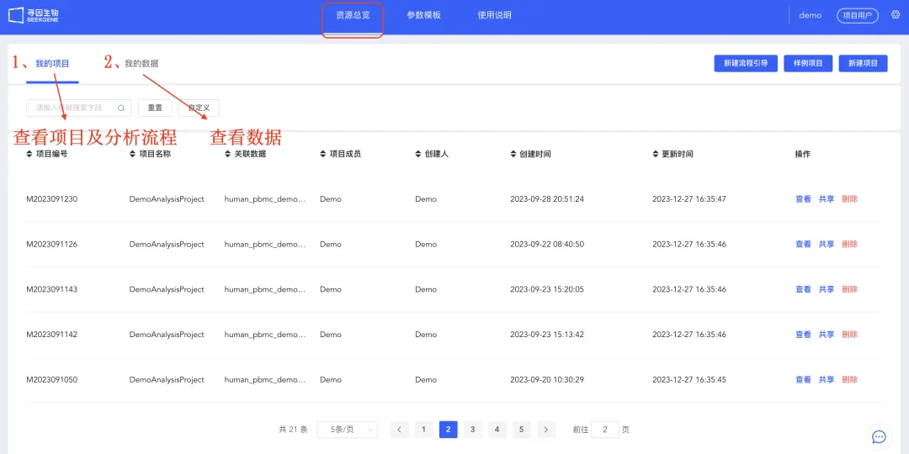
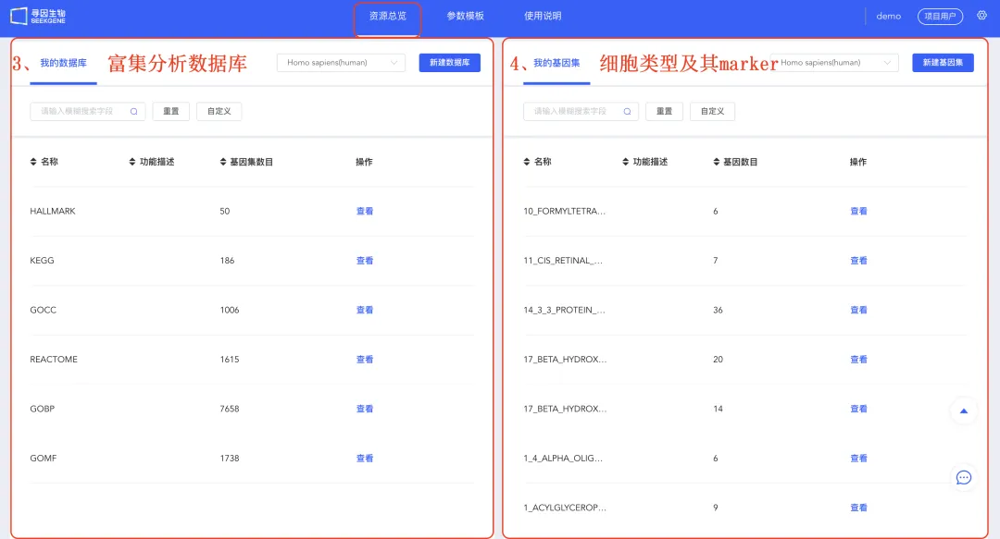
二、我的项目
《我的项目》主要用于管理分析流程。同一个项目下可进行大群及亚群的分析，如需新增或删减样本重新分析建议用户创建新的项目。项目创建流程如下：
1、点击【新建项目】。
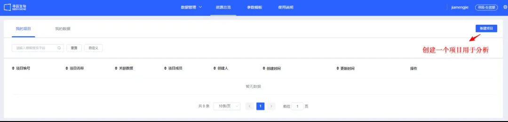
2、填写<分析项目名>及<描述>，【提交】该项目，在弹出的提示信息中点击【确定】保存项目信息。
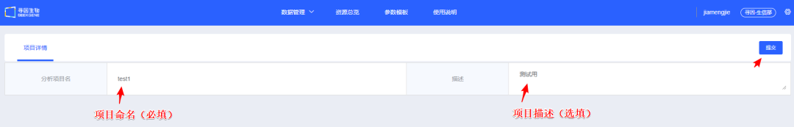
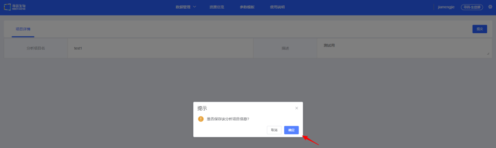
三、基础分析
「基础分析」是分析流程初始模块，该模块可进行基因线粒体过滤，去批次整合聚类，保留质量合格的细胞进行后续分析。分析流程创建及过滤整合聚类流程如下：
1、【新建流程】创建单细胞分析流程。项目开始一般选择样本进行大群分析，后续选择注释好的细胞类型进行亚群分析。
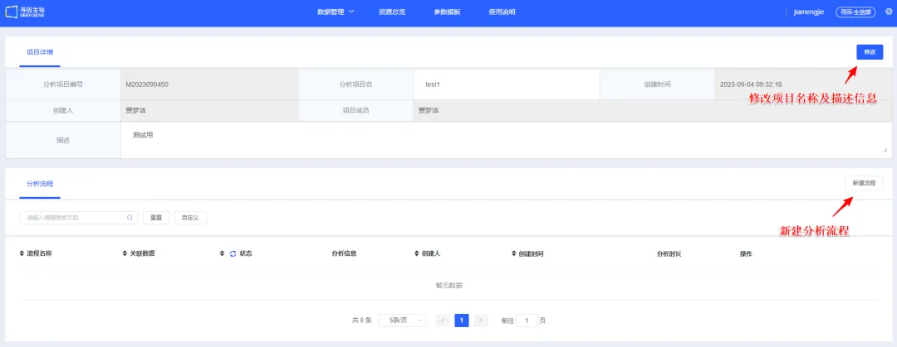
2、填写<流程名称>及<流程描述>，用于后续查找和了解流程信息。
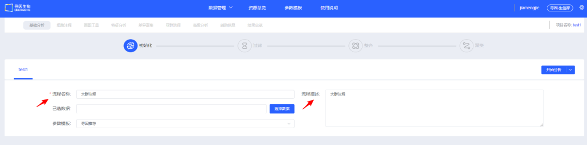
3、【选择数据】选择待分析的样本，可选择已经整合好的多样本数据，也可选多个单样本进行过滤整合。
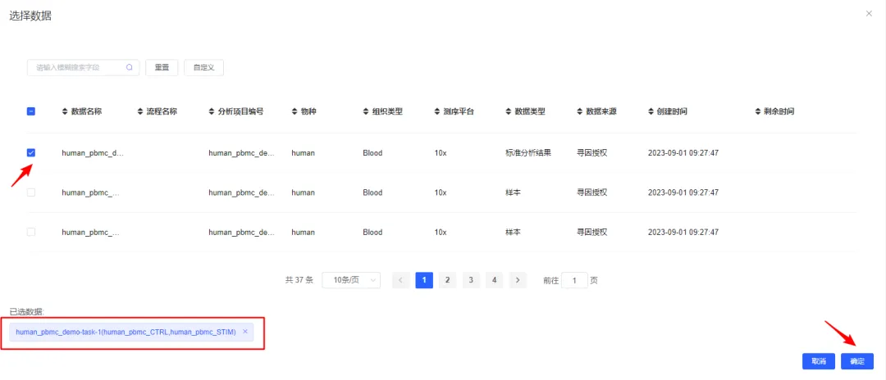
此处数据详细来源可查看《我的数据 》。
4、【分组】对样本添加分组信息，选填，后续模块也可添加分组信息，详情可见「画图工具 」添加标签功能和「差异富集 」分组功能。
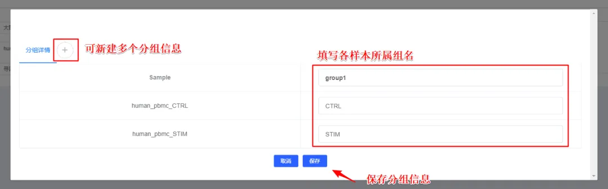
5、填写信息，选择待分析的数据，可以选择【开始分析】手动进行过滤整合和聚类，也可以选择【基础分析】、【基础分析+细胞注释】、【基础分析+细胞注释+差异富集】或【基础分析+细胞注释+差异富集+画图工具】快速进行自动分析。
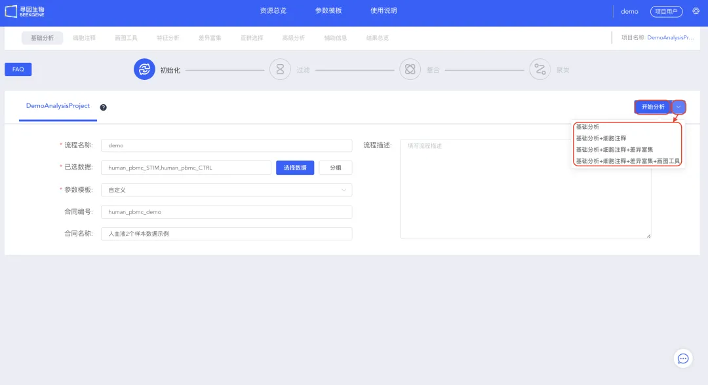
6、【开始分析】后的《图表数据》会统计样本UMI，线粒体占比及基因表达情况，简要展示各样本质量信息。
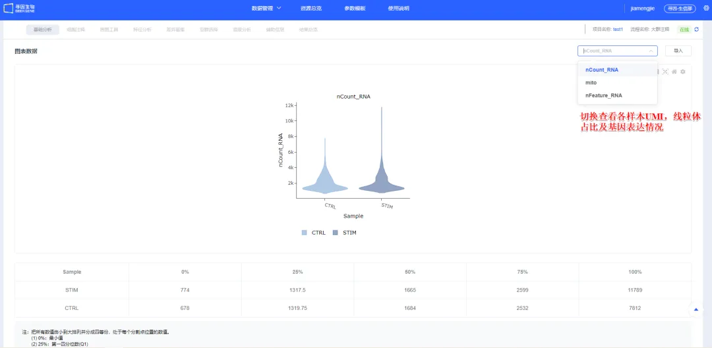
7、展开按钮查看默认参数，用户可参考已发表单细胞文章方法中的过滤参数进行【过滤】。
注：如果选择的是已经整合的数据，点击【过滤】会提示是否需要跳过过滤整合步骤，如果不需要调整参数可跳过进行后续分析，如果需要调整过滤阈值则取消跳过，重新进行过滤整合。
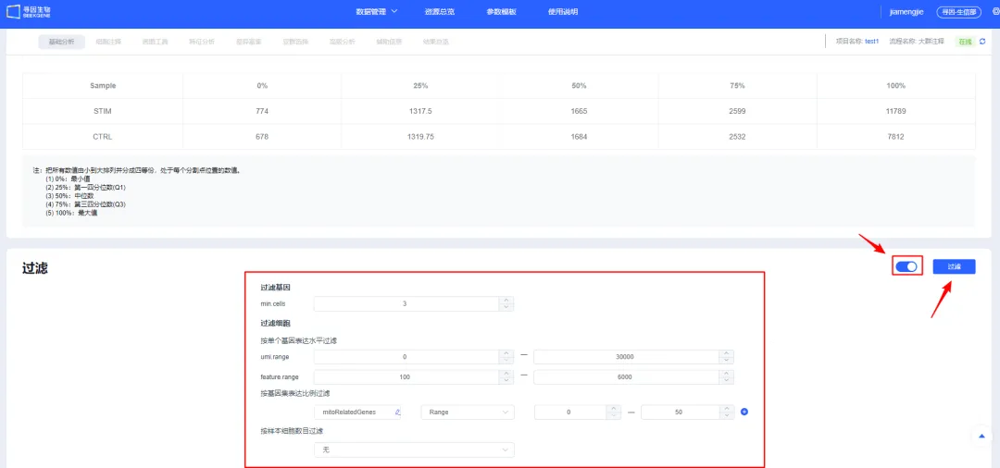
8、【过滤】后可查看各样本过滤后质量信息，同时可对单样本进行个性化调整，保证整体样本质量一致。
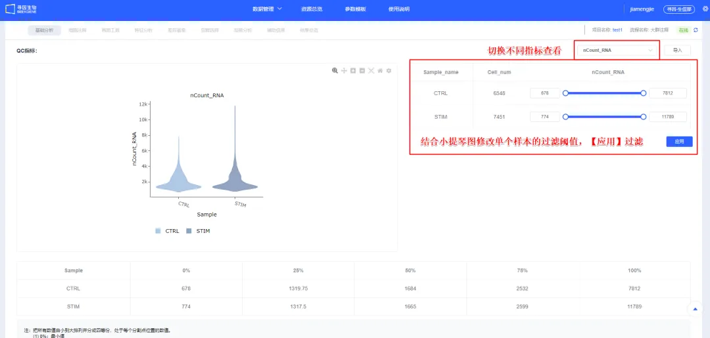
9、质控合格的数据进行【整合】，目前提供三种整合方法，其中 CCA 和 Harmony 会对多个样本进行批次矫正。
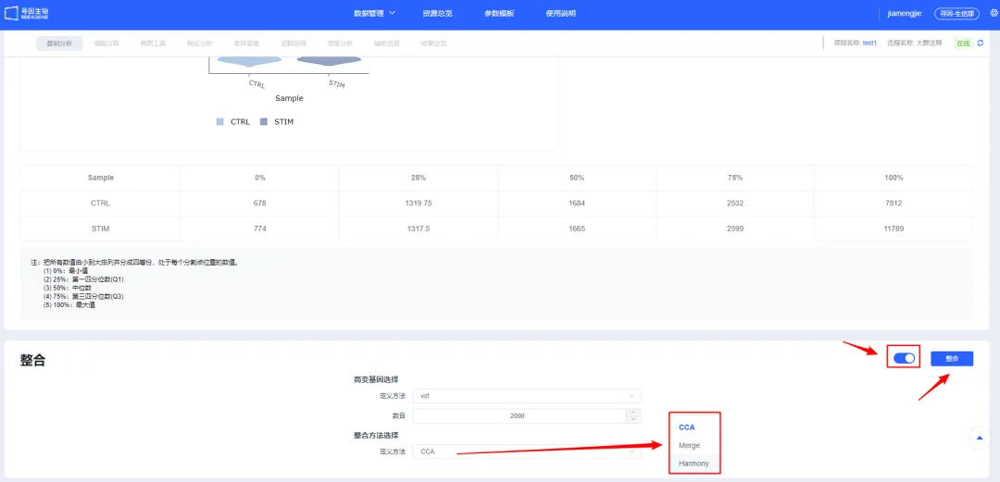
10、【整合】后会展示样本整合情况，可调整整合参数重新整合。建议用户尝试调整多种整合方法，选择更合适的方法进行后续分析。
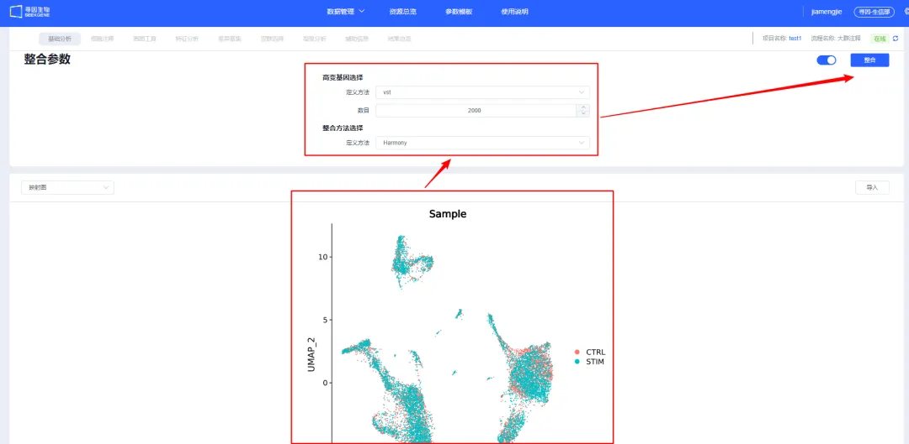
11、【整合】确认后进行【聚类】，可新建选择多个分辨率进行聚类，分辨率越大分群数量越多。后续模块也可新增分辨率进行聚类。
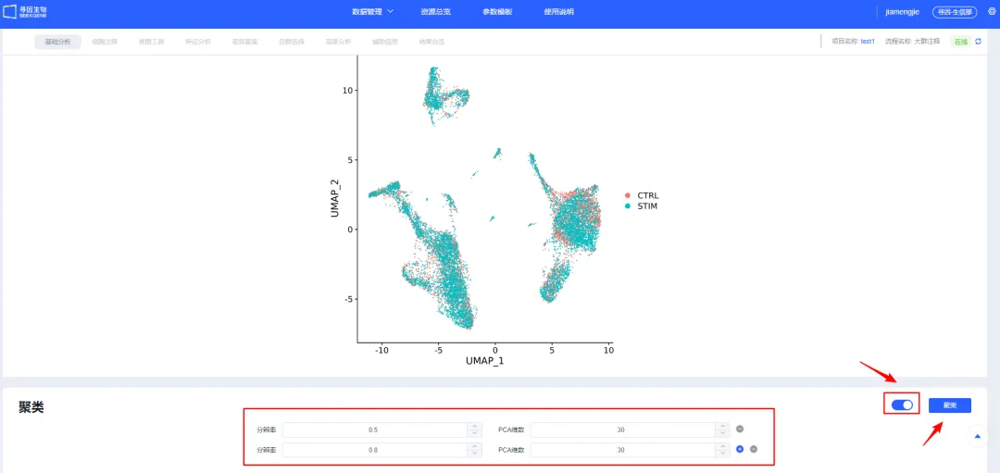
12、【聚类】后无需调整则点击【完成】，跳转「细胞注释 」模块正式开始进行单细胞相关分析。该步会耗费一些时间，请用户耐心等待。
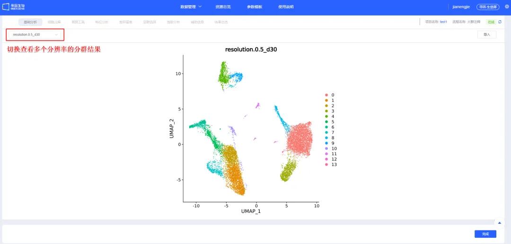
四、细胞注释
完成所构建项目的「基础分析 」后，可进入「细胞注释」模块，该模块展示了细胞注释前后的降维图、cluster差异基因列表及top基因的可视化结果，并且可分别对多组聚类结果进行自动注释（singleR算法）和手动注释。
1、主要内容：
「细胞注释」 模块主要包括四部分内容：降维聚类结果、top基因或指定基因集的可视化结果、cluster差异基因列表及差异基因的表达情况。点击选择降维聚类结果，界面中相关结果也会随之发生改变。
（1）降维聚类结果包括UMAP和tSNE两种降维方式的结果，降维聚类图为交互式图片，可使用鼠标更改cluster的标签位置和查看cluster的细胞数。
（2）每次更新聚类或者注释结果时，均会计算每个cluster的差异基因列表，并且对每个cluster的top 5（logFC从大到小排序）基因进行气泡图、小提琴图和热图可视化展示以及每个样本中每组细胞的占比柱状图。
（3）top基因集可视化结果可以自定义修改展示基因，点击【top】弹出每组的基因列表，勾选或不勾选对应的基因后，点击【确定】即可对所选的基因进行重新绘图；同时也可以对指定基因进行可视化展示，点击top下拉中的【基因集】弹出基因集窗口，可从寻因数据库中选择相关基因集，也可以点击分析流程基因集后面的【+】自定义基因集进行可视化展示。
（4）基因列表记录所有基因在某个cluster或分组相对于其他细胞的logFC值。点击基因名称跳转到NCBI网站，点击基因所在的行，可绘制该基因的FeaturePlot图（位于列表右侧）。该列表默认按照logFC从大到小排序，点击表头可自定义排列顺序。
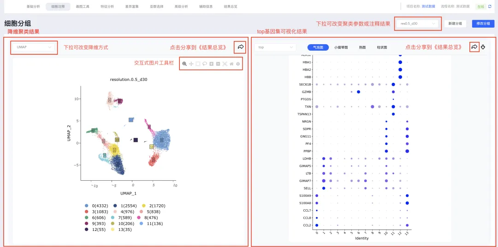
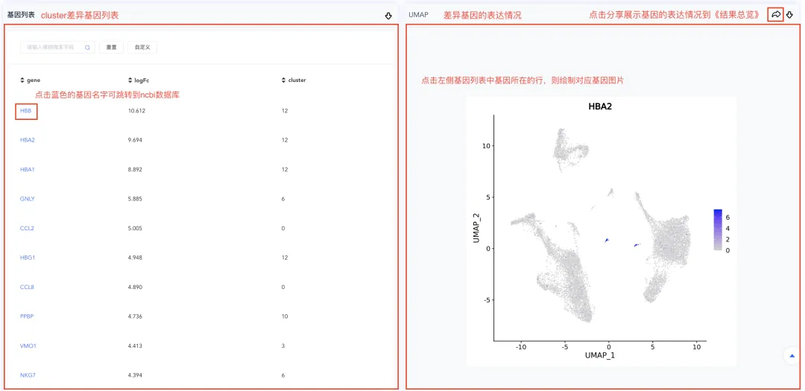
2、自动注释：
「细胞注释」模块主要可进行的分析包括自动注释和手动注释，在完成「基础分析 」后，会基于最小分辨率，使用singleR软件及其参考集（人：HumanPrimaryCellAtlasData_main，小鼠和大鼠：ref_Mouse_all）进行自动注释，自动注释的标签为CellAnnotation。
（1）首先下拉选择自动注释要使用的分辨率，然后点击【新建分组】，出现添加分组弹窗，该弹窗可随意拖动位置（鼠标放置在可拖拽区域）和大小（鼠标放置在弹窗右下角）。
（2）填写<分组名称>，并选择<自动注释参考集>，最后点击【自动注释】，自动刷新分析进度。
（3）分析进度完成后，对应的注释结果自动填充到分组详情表中。同时，降维图、top基因可视化结果、基因列表和基因可视化图同步更新。注释完成后后点击弹窗底部的【关闭】，关闭弹窗。
（4）点击同一分辨率下新增分组名称的注释标签，可进行结果的切换。
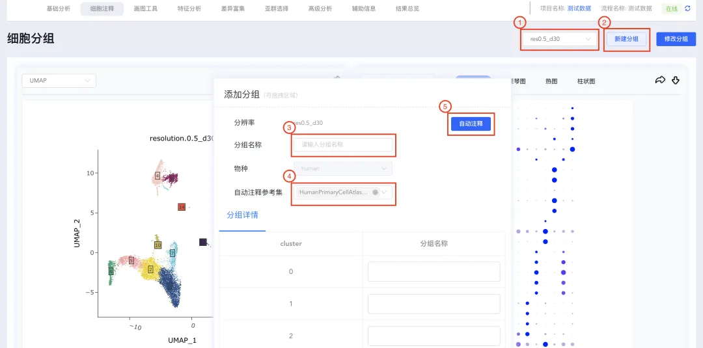
3、手动注释：
当我们依据cluster间的差异基因或收集到的一些marker基因的表达情况，需要输入或修改cluster的注释结果时，可进行如下相关手动注释的操作。
（1）首先下拉选择手动注释要使用的分辨率，然后点击【新建分组】，出现添加分组弹窗，该弹窗可随意拖动位置（鼠标放置在可拖拽区域）和大小（鼠标放置在弹窗右下角）。
（2）填写<分组名称>，在分组详情中输入每个cluster对应的细胞类型。
（3）每个cluster对应的的细胞类型输入完成后，点击弹窗底部的【保存】，出现分析进度条，完成后点击【关闭】按钮，关闭弹窗。
（4）点击同一分辨率下新增分组名称的注释标签，可进行结果的切换。
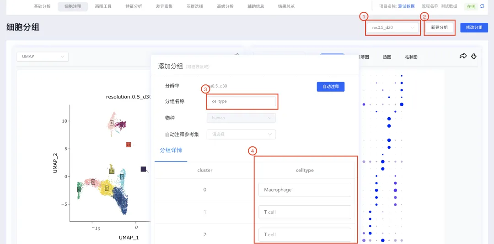
（5）新建分辨率：
点击细胞分组中的【修改分组】弹出分辨率窗口，点击分辨率列表后面的【+】弹出新增分辨率窗口，输入分辨率（Resolution）和PC数量（nPCA）后，点击【保存】，即可基于新的分辨率和PC数量重新进行聚类分析。完成后，细胞分组下拉框和分辨率列表均新增对应结果，点击细胞分组可进行结果切换。
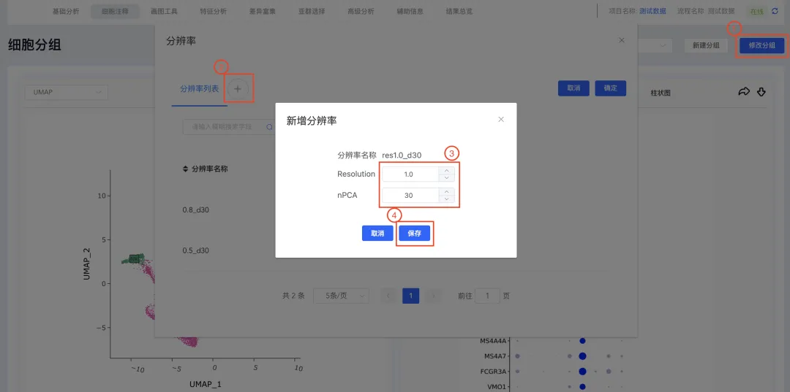
（6）修改注释结果：
点击细胞分组中的【修改分组】弹出分辨率窗口，点击分辨率对应的【编辑】可修改注释结果，如果该分辨率未做任何注释，则弹出暂无分组 的提示信息；点击【删除】即可删除该分辨率及对应的细胞注释结果。
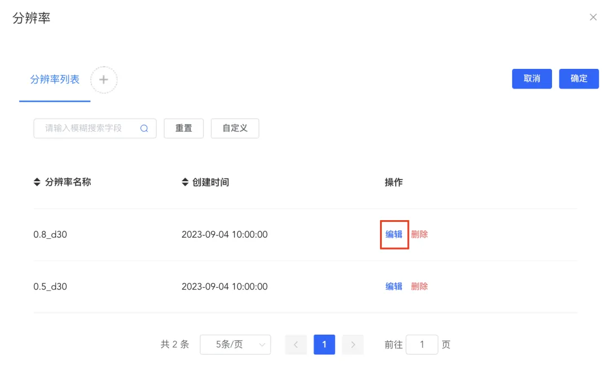
（7）保存注释结果：
点击【编辑】后弹出编辑分组弹窗，分组详情中则包括此分辨率下所有cluster的标注结果，可进行相应的编辑处理，修改完成后点击【保存】同步结果。点击【x】可删除该分辨率下的该组注释结果。
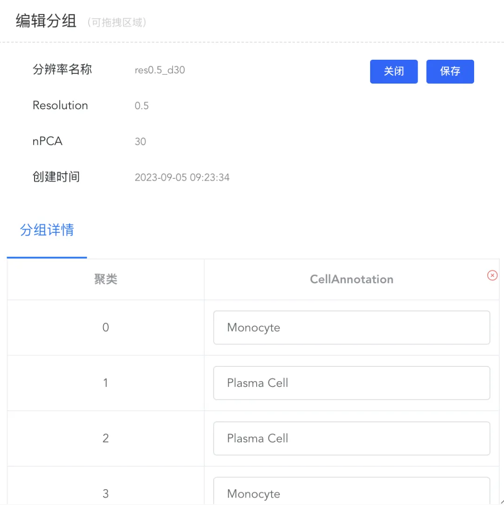
（8）注意事项
a.可以针对同一个降维聚类结果进行多次注释并修改注释；
b.可比较使用不同方法、参考集的注释结果差异；
c.当细胞数量过大时，热图会丢失label等信息，因此热图是经过降低数据量(downsample)绘制的，每个cluster或分组最多保留500个细胞；
d.为了加快计算差异基因速度，该模块基因的logFC是基于edgeR包计算得到的，与FindAllMarkers或者FindMarkers结果会存在些许差异，但两种方法计算出的基因呈线性相关；
e.降维聚类结果、top基因或指定基因集的可视化结果及差异基因的表达情况均可分享到「结果总览 」，方便结果的查看和导出。
4、创建top N基因集
点击【top】按钮打开top基因界面，填写top基因的数量（如top10），点击【创建基因集】，填写基因集名称，点击【创建】完成基因集的创建。
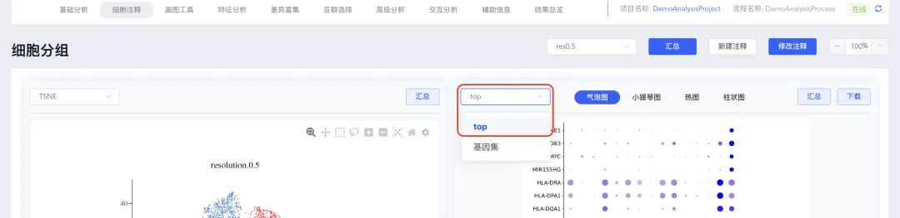
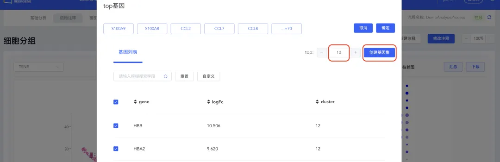
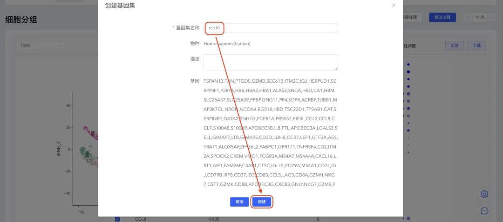
五、画图工具
「画图工具」提供了添加多条件标签的功能，您可以使用它来绘制各种图表，包括小提琴图、降维图、FeaturePlot、DotPlot、堆叠柱状图和饼图等。无论是展示特定基因或细胞类型的表达模式，还是探索数据的分布情况，这些图表都能提供直观的可视化效果，助您更好地理解数据，并进行进一步的分析和解释。
1、下载报告
点击【下载报告】，即可将「画图工具」的所有图表结果以报告形式下载到您的本地计算机。请注意，在下载过程中可能需要等待大约半分钟的时间。
2、添加标签
点击【添加标签】，弹出添加标签页面，按照条件对Barcode进行标记。
（1）在<名称>处对新标签进行命名。
（2）<运算符>包括等于“==”和不等于“≠”，<条件>包括交集“and”和并集“or”。在<运算符>和<条件>的帮助下，设置多个条件共同定位某群关键的细胞。
（3）不满足条件的Barcode默认标记为”Undefined“，也可以进行自定义标记。
（4）点击【添加标签】，完成新标签的添加，即可在「画图工具」中根据新标签进行绘图分析。
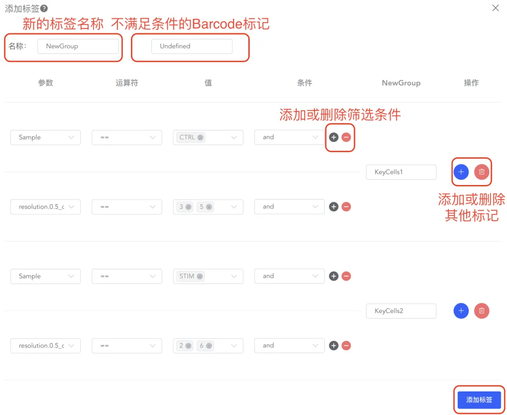
3、添加图组
3.1 手动添加
（1）点击【添加图组】，弹出输入图组名称窗口，输入图组名称并点击【确定】，即可在「画图工具」中看到新命名的图组；
（2）长按并上下拖动”十字花“，可以调整图组顺序；
（3）点击图组名称右侧的下拉框，展开或收缩图组结果。收缩状态下，长按并拖动“十字花”调整图组顺序；
（4）点击【修改】，弹出输入图组名称窗口，输入新名称并点击【确定】，修改当前图组名称；
（5）点击【删除】，删除当前图组。
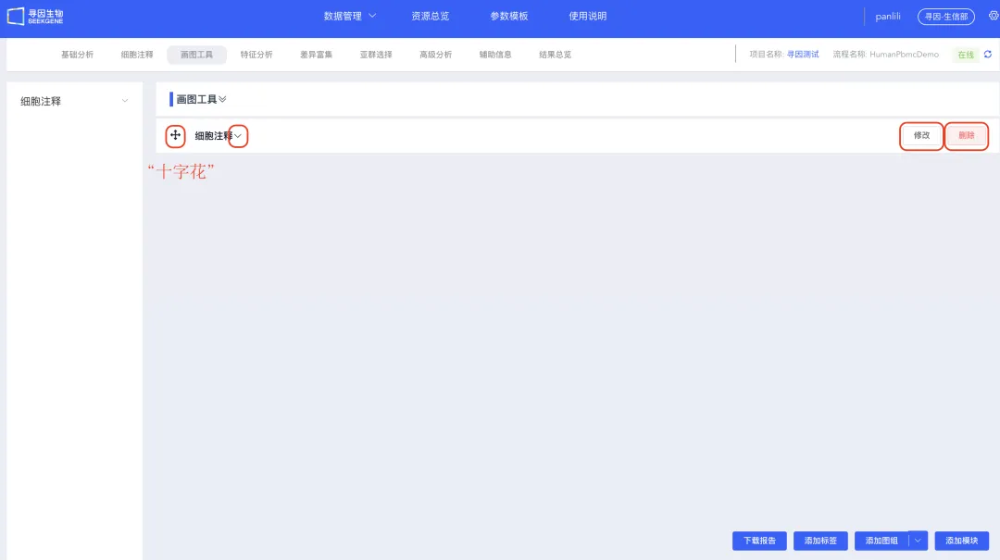
3.2 自动编排
点击【添加图组】右侧的下拉框，选择【自动编排-标准】，填写合适的参数，自动创建“质控”和“细胞注释”图组，自动绘制降维图、mito、nFeature_RNA和nCount_RNA等多种形式的结果图片。
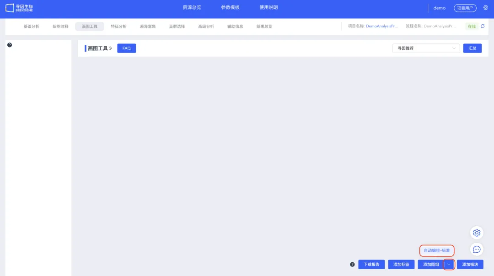
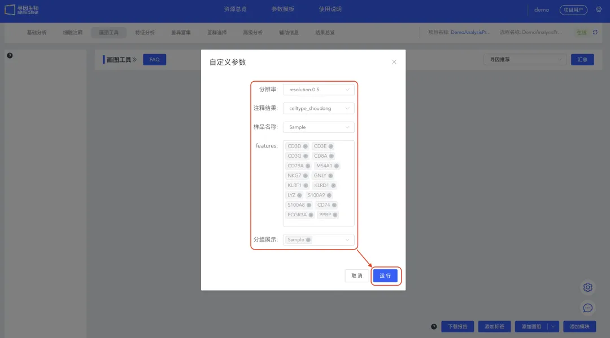
4、添加模块
4.1点击寻因推荐下拉框，即可在画图工具模块选择不同的配色方案，包括npg、lancet、aaas、jco、gsea、ucscgb、igv和寻因推荐。
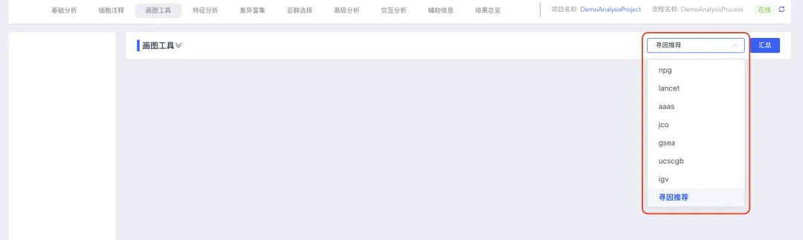
4.2 点击【添加模块】，在<标题>处输入图表标题，在<描述>处对图表信息进行描述，选择合适的图表类型小提琴图、降维图、FeaturePlot、DotPlot或分组统计图进行绘图分析。
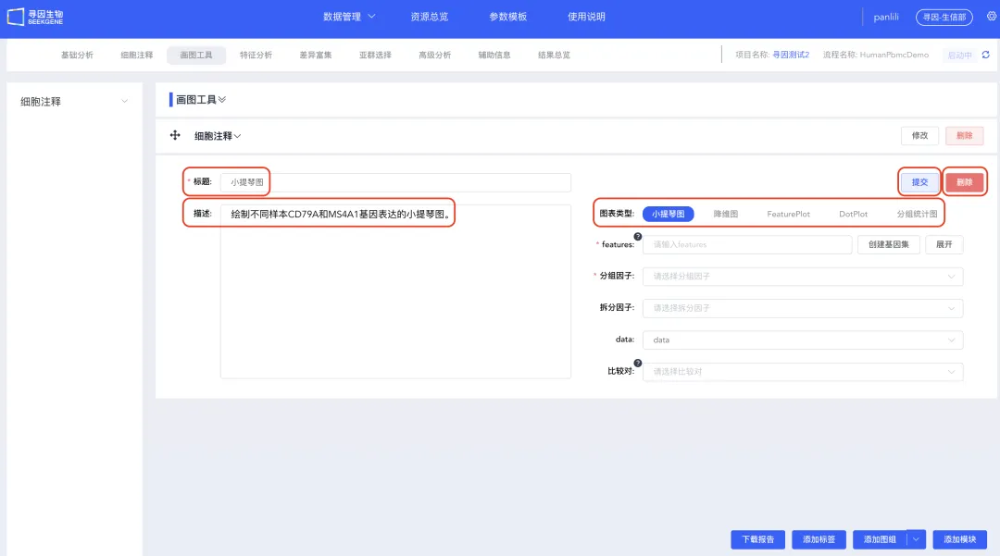
4.3 小提琴图
可按分组类型，绘制基因表达量小提琴图。
（1）features
输入要绘制的基因，下拉框模糊匹配搜索，选择要绘制的基因，可连续输入多个基因。点击【创建基因集】，弹出输入基因集名称窗口，输入基因集名称，点击【确定】，完成基因集的创建。输入要绘制的基因集名称，下拉框模糊匹配搜索，选择要绘制的基因集，快速对基因集进行绘图，在其他模块中也可快速对此基因集进行绘图。点击【展开】，查看全部基因名称；点击【折叠】，折叠基因名称。
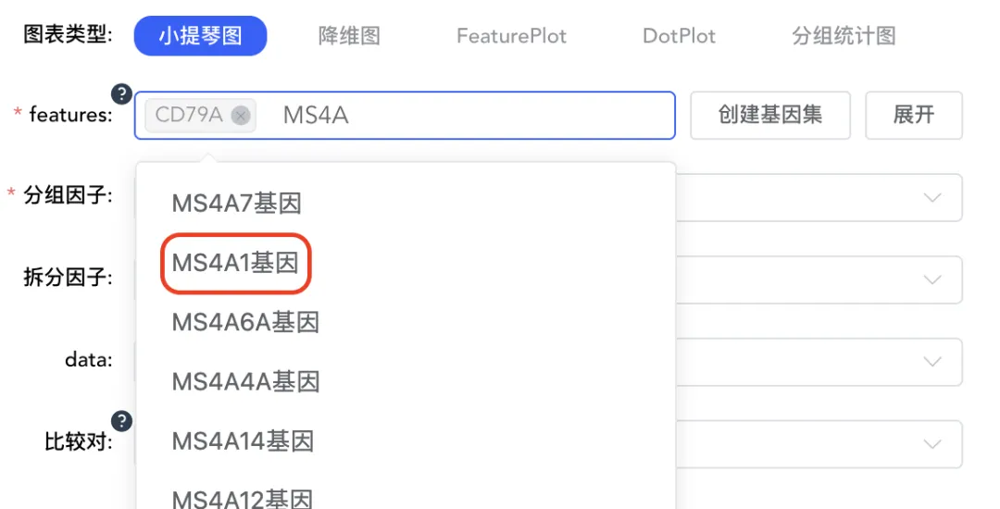
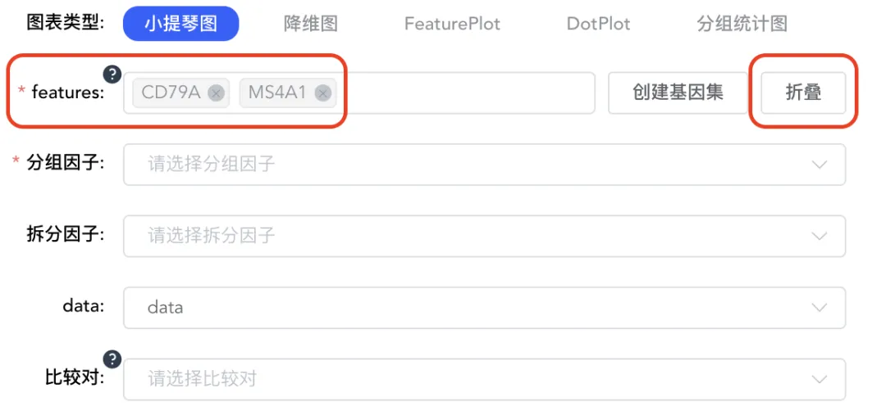
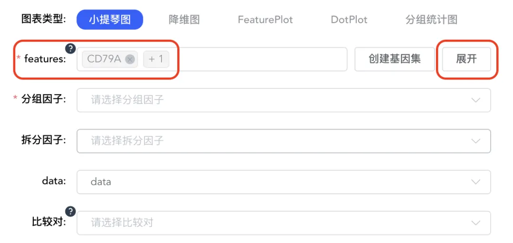
（2）分组因子
对meta.data中的分类标签和【添加标签】中新添加的标签，选择一个来按组（颜色）对细胞进行分类，必填。可根据二级标签，只展示部分分组（颜色）。
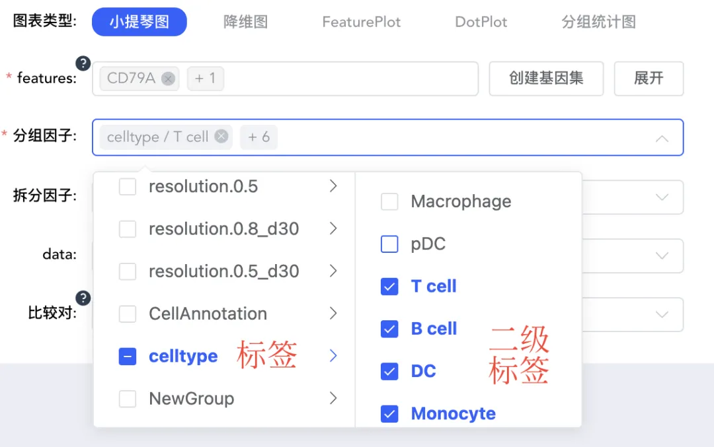
（3）拆分因子
对meta.data中的分类标签和【添加标签】中新添加的标签，选择一个将图形拆分为不同的子图，非必填。可根据二级标签，只展示部分分组。点击分组因子和拆分因子后的箭头可以快速调整分组因子和拆分因子的顺序。
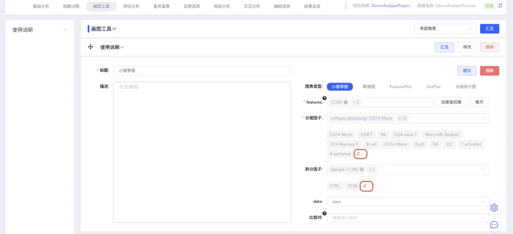
（4）data
选择使用哪个数据槽（slot）的基因表达数据进行可视化展示，默认是data。
（5）比较对
当分组因子有多个时，可标注两两比较p值，非必填。可根据二级标签，只展示部分分组的差异比较。
（6）选择合适的绘图参数，点击【提交】，绘制小提琴图。
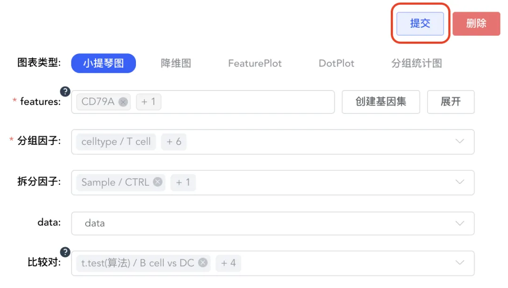
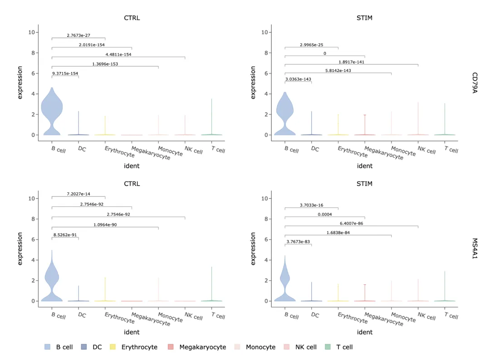
（7）点击【删除】，删除当前小提琴图结果。
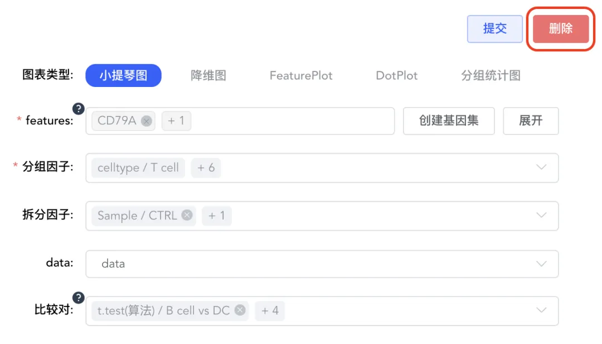
4.4 降维图
可按照分组或者样本拆分情况，绘制降维图。
（1）降维数据：umap方式、tsne方式、pca方式。
（2）分组因子
对meta.data中的分类标签和【添加标签】中新添加的标签，选择一个来按组（颜色）对细胞进行分类，必填。可根据二级标签，只展示部分分组（颜色）。
（3）拆分因子
对meta.data中的分类标签和【添加标签】中新添加的标签，选择一个将图形拆分为不同的子图，非必填。可根据二级标签，只展示部分分组。
（4）高亮细胞
输入关注细胞的Barcode，高量显示该细胞，非必填。
（5）常规降维图
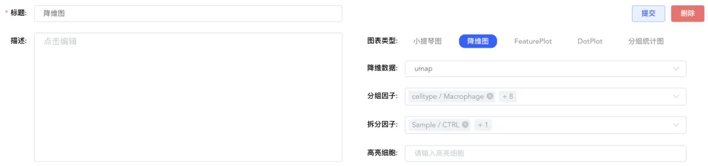
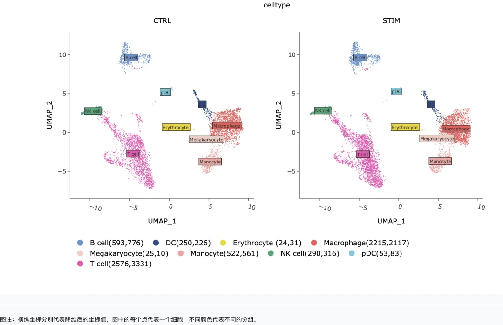
（6）高量细胞降维图
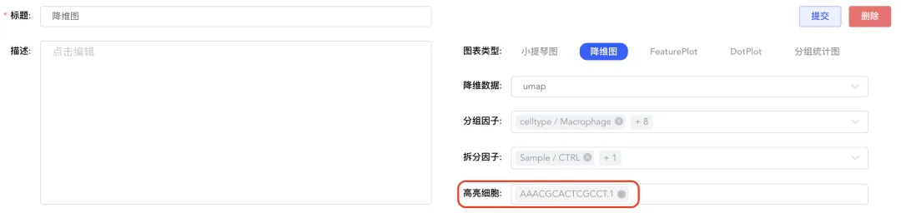
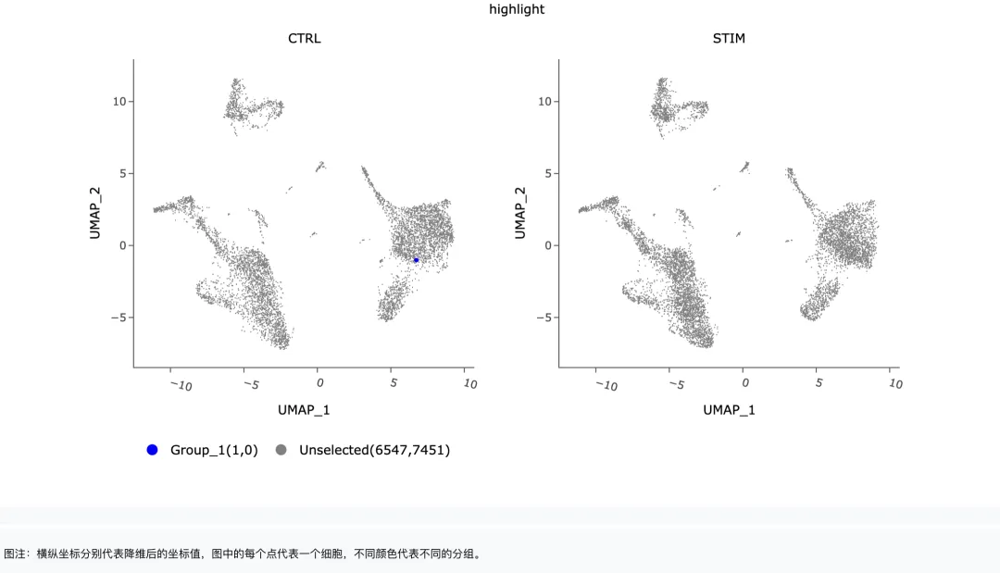
4.5 FeaturePlot
可按分组类型，绘制基因表达量FeaturePlot图。
（1）features
输入要绘制的基因，下拉框模糊匹配搜索，选择要绘制的基因，可连续输入多个基因。点击【创建基因集】，弹出输入基因集名称窗口，输入基因集名称，点击【确定】，完成基因集的创建。输入要绘制的基因集名称，下拉框模糊匹配搜索，选择要绘制的基因集，快速对基因集进行绘图，在其他模块中也可快速对此基因集进行绘图。点击【展开】，查看全部基因名称；点击【折叠】，折叠基因名称。
（2）降维数据：umap方式、tsne方式、pca方式。
（3）拆分因子
对meta.data中的分类标签和【添加标签】中新添加的标签，选择一个将图形拆分为不同的子图，非必填。可根据二级标签，只展示部分分组。
（4）是否排序
是否按照表达量的顺序来绘制细胞，默认是按照表达量的顺序来绘制细胞。
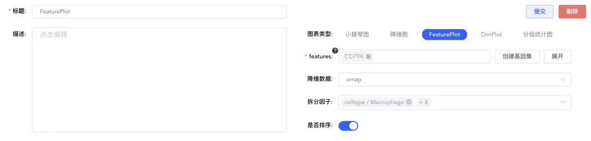
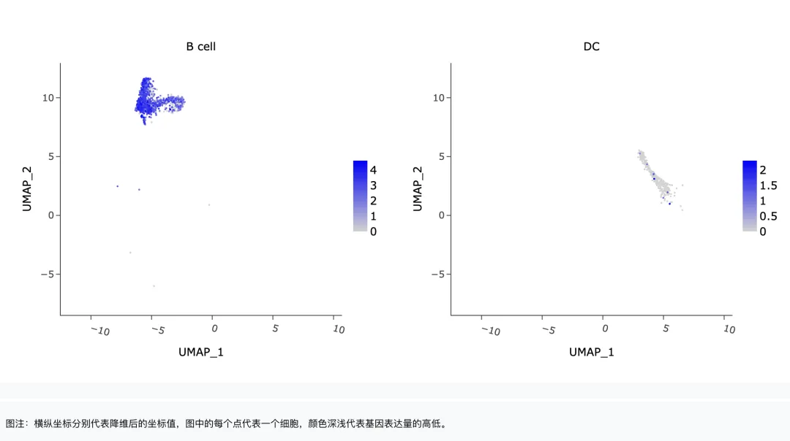
4.6 DotPlot
可按分组类型，绘制基因表达量dotplot图。
（1）features
输入要绘制的基因，下拉框模糊匹配搜索，选择要绘制的基因，可连续输入多个基因。点击【创建基因集】，弹出输入基因集名称窗口，输入基因集名称，点击【确定】，完成基因集的创建。输入要绘制的基因集名称，下拉框模糊匹配搜索，选择要绘制的基因集，快速对基因集进行绘图，在其他模块中也可快速对此基因集进行绘图。点击【展开】，查看全部基因名称；点击【折叠】，折叠基因名称。
（2）分组因子
对meta.data中的分类标签和【添加标签】中新添加的标签，选择一个来按组对细胞进行分类，必填。可根据二级标签，只展示部分分组。
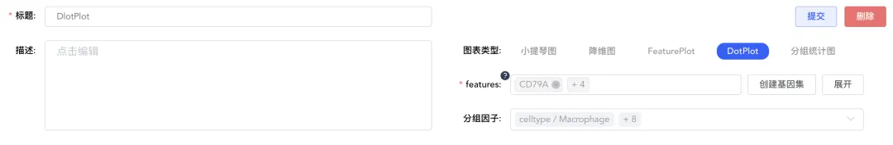
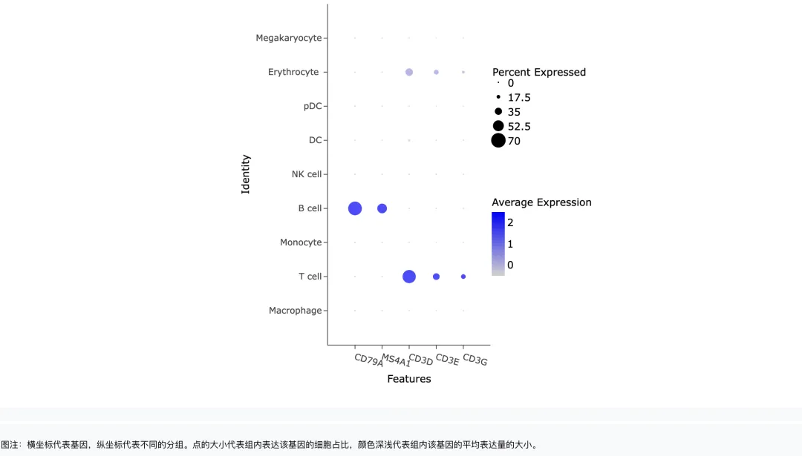
4.7 分组统计图
4.7.1 堆叠柱状图
（1）分组因子
对meta.data中的分类标签和【添加标签】中新添加的标签，选择一个来按组（颜色）对细胞进行分类，必填。可根据二级标签，只展示部分分组（颜色）。
（2）拆分因子
对meta.data中的分类标签和【添加标签】中新添加的标签，选择一个将图形拆分为不同的子图，非必填。可根据二级标签，只展示部分分组。
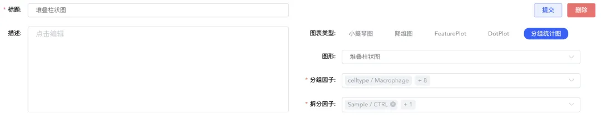
4.7.2 饼图
（1）分组因子
对meta.data中的分类标签和【添加标签】中新添加的标签，选择一个来按组（颜色）对细胞进行分类，必填。可根据二级标签，只展示部分分组（颜色）。
（2）拆分因子
对meta.data中的分类标签和【添加标签】中新添加的标签，选择一个将图形拆分为不同的子图，非必填。可根据二级标签，只展示部分分组。
4.8 热图
（1）features
输入要绘制的基因，下拉框模糊匹配搜索，选择要绘制的基因，可连续输入多个基因。点击【创建基因集】，弹出输入基因集名称窗口，输入基因集名称，点击【确定】，完成基因集的创建。输入要绘制的基因集名称，下拉框模糊匹配搜索，选择要绘制的基因集，快速对基因集进行绘图，在其他模块中也可快速对此基因集进行绘图。点击【展开】，查看全部基因名称；点击【折叠】，折叠基因名称。
（2）分组因子
对meta.data中的分类标签和【添加标签】中新添加的标签，选择一个来按组对细胞进行分类，必填。可根据二级标签，只展示部分分组。
（3）拆分因子
对meta.data中的分类标签和【添加标签】中新添加的标签，选择一个将图形拆分为不同的子图，非必填。可根据二级标签，只展示部分分组。
4.9 图片美化
点击图片右侧的铅笔按钮，弹出图片美化界面，可以对标题、图例、图形大小及颜色进行修改，还可以下载多种格式的图片。
5、页面左侧是图组和模块目录，可以快速选择并查看不同图组下不同模块中的图表结果。
六、特征分析
「特征分析」可以根据寻因预制特征基因集和自定义基因集进行打分分析，助您评估基因表达数据中的重要特征及相关性。
1、《特征分析》
1.1 <类型>选择"特征集"
（1）选择对应的<物种>；
（2）点击<特征集>搜索框，弹出特征集窗口，包括寻因预制特征集和自定义流程特征集，选择合适的特征集；
（3）填写<特征名称>；
（4）点击【提交】即可得到特征分析结果。
（5）提交单个特征集，特征分析结果以小提琴图的形式展示。分析结果处还可以通过选择其他<分组因子>，借助交互式绘图工具，点击【确定】优化图片。
（6）提交两个及以上特征集，特征分析结果以DotPlot的形式展示。分析结果处还可以通过选择其他<分组因子>，借助交互式绘图工具，点击【确定】优化图片。
1.2 <类型>选择"自定义特征集"
（1）填写<特征名称>；
（2）输入特征相关<基因>；
（3）点击【提交】即可得到特征分析结果。分析结果处还可以通过选择其他<分组因子>，借助交互式绘图工具，点击【确定】优化图片。
2、《历史记录》
使用预制特征集和自定义特征集进行特征分析的历史记录。
七、差异富集
在「差异富集」模块中，您可以轻松筛选在不同分组条件下，不同细胞类群中具有表达差异的基因，并进行功能富集分析。主要操作分为比较方案的建立和结果内容的调整。
1、比较方案的建立
点击主界面右上方【新建方案】按钮，首次使用会直接弹出新增比较方案窗口，否则需要在弹出的比较方案窗口中点击左上方的【+】按钮来新增一个比较方案。新增比较方案中主要有三部分内容：方案名称、细胞分组和比较组合。
（1）方案名称应填写一个能够清晰反映比较情况，并易于区分和查找的名称。
（2）细胞分组可以选择关注的细胞组群，通常选择Sample（样本来源），可以进行多选，默认全选。如果没有合适的样本分组，可以点击后面的【分组】按钮，并给感兴趣的样本填写相同的名称（请避免使用特殊字符），同时可以修改分组名称（不支持中文，默认为’group1’），之后就可以在下拉框中选择刚刚建立的细胞分组信息。
（3）比较组合可以选择哪些细胞类群之间进行两两比较，通常选择细胞注释结果做为比较的依据。选择后平台会自动列出该标签下所有元素的两两组合（如果组合数量超过5组，则需要点击【展开】来显示全部组合）。最多可以选择10组的比较对，并可通过点击比较对来调换细胞类群的前后顺序。
（4）比较方案中记录着所有比较方案的详细信息，可以点击【编辑】按钮对已有方案进行修改，或者点击【删除】按钮对方案进行删除。操作完成后可点击背景或右上方的【关闭】按钮来回到主界面。
2、结果内容的调整
如果已经有运行成功的比较方案，主界面会展示三行结果内容。通过主界面右上方下拉框可以选择不同的比较方案进行展示。
（1）第一行是差异结果的展示。左侧是细胞分组统计柱状图，右侧是差异基因的火山图、热图和小提琴图。
a.左侧第一个下拉框可以选择细胞分组情况，【分组】对应着比较方案中的“细胞分组”，【比较】对应着比较方案中的“比较组合”。
b.左侧第二个下拉框可以选择进行比较的细胞对，选择后柱状图会在两种细胞上添加亮绿色的边框，右侧会对应显示两种细胞的差异基因结果。除点击下拉框外也可以直接在柱状图中点击颜色块来进行选择，同一个颜色块点击一次为选择，点击两次为取消选择。
c.右侧除了选择用于展示的图像类型外，下拉框也可以选择用于展示的差异基因类型，包括上调基因、下调基因、所有基因和基因集（基因集的使用与「细胞注释 」中一致），而当点击【铅笔】按钮可以选择关注的基因，进而对这些基因进行针对性地展示。
（2）第二行是富集分析的结果。左侧是所选细胞对的差异分析和富集分析结果，右侧是富集分析的DotPlot图。
a.左侧差异分析会展示两组细胞差异基因的表格，表格可以进行搜索、排序和筛选等操作，点击【分析参数】可以对检验方法和阈值等进行修改，点击提交即可按设定的参数重新筛选差异基因。
b.左侧的富集分析会展示差异基因的富集分析结果，默认是“HALLMARKER”的结果，和其他表格一样可以进行搜索、排序和筛选等操作，点击【分析参数】可以对富集方法、阈值以及数据库进行调整，例如加上“KEGG”的富集结果。
c.右侧的下拉框可以选择不同数据库（左侧富集分析中加上的数据库）的结果进行展示，并且可以选择感兴趣的部分条目进行展示。
（3）第三行是整体的火山图和气泡图的结果，与第一行左侧两个下拉框的选择有关。火山图展示细胞对上下调top5的差异基因。气泡图展示整体、上调和下调三类基因top3的富集结果。
（4）每一部份的【分享】按钮可以将这部分结果导入到「结果总览 」中，【下载】按钮可以将这部分的结果进行下载，页面右上方的【分享】按钮则会将该方案的所有结果导入到「结果总览 」中。
八、亚群选择
在「亚群选择」模块中，您可以按照自定义的规则（和「画图工具 」中【添加标签】规则一致），将感兴趣的细胞类群进行提取和存储。主界面分为两部分内容：《亚群选择》和《历史记录》。
1、《亚群选择》
包括中有五列内容：<参数>、<运算符>、<值>、<条件>和<子集名称>。
（1）<参数>是用来对细胞进行分组的各种标签，<运算符>包括等于"=="和不等于“≠”，<值>为所选参数里面的各种细胞组名，<条件>包括交集“and”和并集“or”；<子集名称>是所选的感兴趣的细胞类群的命名，需以英文字母开头，可包含英文字母、数字和下划线。
（2）在条件后面有【+】按钮，可以用多个条件来筛选子集，也可用【-】按钮来删除某个条件。填好之后可以点击右上方的【提交】按钮，就会按定义的规则筛选亚群并记录在历史记录中。
2、《历史记录》
历史记录为所有筛选亚群的表格。
（1）和云平台所有表格一样，可以通过搜索框进行模糊搜索，也可以在表头进行排序和筛选的操作。其中最重要的是操作列，可以查看对应亚群的筛选条件，也可以对筛选的亚群进行删除。
（2）状态显示‘已完成’的亚群数据可以在「资源总览 」下的《我的数据 》中找到。
（3）点击某子集后的加号按钮，新建亚群流程时数据会自动选中该子集。
九、高级分析
这一模块包含《高级分析》和《分析列表》两个板块。《高级分析》板块中，您可以通过设置相应的参数，便捷地进行单细胞数据的细胞通讯、拟时序、转录因子和infercnv高级分析。《分析列表》板块则展示已提交的任务名称、分析内容、提交时间、返回信息、状态和相关操作，点击蓝色【搜索】按钮展示任务参数设置，点击绿色【下载】按钮下载结果报告，点击红色【删除】按钮删除任务。您可以通过搜索任务名称等在《分析列表》中快速找到目标任务。
1、细胞通讯分析
<分析流程>选择“cellphonedb”，填写参数后点击【提交】进行分析。
（1）物种：选择该分析流程数据对应的物种名称，目前支持人和小鼠。
（2）任务名称：本次分析的任务名称，需以英文字母开头，可包含英文字母、数字、下划线和中文。
（3）配置info文件：
第一列：分组组名列；
第二列：样本标签；
第三列：细胞类型标签。
配置好第一行之后，点击【添加】，在第一列下自定义分组名，第二列下选择样本（可多选），第三列下选择细胞类型（可多选），如下图。
（4）备注：自定义备注信息。

2、拟时序分析
<分析流程>选择“monocle3”，填写参数后点击【提交】进行分析。
（1）任务名称：本次分析的任务名称，需以英文字母开头，可包含英文字母、数字、下划线和中文。
（2）root类型：选择要分析的细胞类型或者聚类对应的标签，比如细胞注释分组celltype，与
（3）root节点：选择细胞发育过程中的祖细胞或者发育前期的细胞类型，如Plasmablast细胞。
（4）细胞类型：选择细胞发育过程中的细胞，如Plasma细胞。
（5）拆分因子：多选，绘图时的拆分标签。一般选择分组或者样本的标签，比如Group或Sample。
（6）分析类型：单细胞转录组选择“RNA”，10X空间转录组选择“SCT”。
（7）允许存在多个不相连轨迹：细胞是否可以以不同的方式发发育和分化，形成多个不同的发育分支或轨迹，默认允许。
（8）富集分析：是否进行富集分析，默认进行富集分析。
（9）物种：选择该分析流程数据对应的物种名称，目前支持人和小鼠。
（10）备注：自定义备注信息。
<分析流程>选择“monocle2”，填写参数后【提交】进行分析。
（1）任务名称：本次分析的任务名称，需以英文字母开头，可包含英文字母、数字、下划线和中文。
（2）分组因子：选择要分析的细胞类型或者聚类对应的标签，与<细胞类型>配合使用。假如想对注释好的细胞类型进行分析，则选择其对应的标签，例如CellAnnotation。
（3）细胞类型：多选，选择要分析的细胞类型或者聚类，如Monocyte细胞。
（4）筛选因子：选择要筛选的样本或分组对应的标签，与<筛选对象>配合使用，如Sample标签。
（5）筛选对象：多选，选择要保留的样本或分组，如A样本。
（6）拆分因子：多选，绘图时的拆分标签。一般选择分组或者样本的标签，比如Group或Sample。
（7）物种：人、鼠等多种物种。
（8）排序基因：
a.dispersion：高变基因，详见monocle2官网"Clustering cells without marker genes "部分，与
b.differential：差异基因，详见monocle2官网"choose genes that define a cell's progress"部分，与
c.custom：自定义基因，上传自定义的基因进行分析。例如根据<分组因子>计算出的去重后的差异基因列表进行拟时序分析，列表格式模板可在该参数中下载，与<自定义差异基因集>配合使用。
（9）mean_expression：当“排序基因”为dispersion的时候可以修改，默认为0.1。
（10）dispersion_empirical：当“排序基因”为dispersion的时候可以修改，默认为1。
（11）min_expr：当“排序基因”为differential的时候可以修改，默认为0.1。
（12）qval：当“排序基因”为differential的时候可以修改，默认为0.01。
（13）自定义差异基因集：点击【模版下载】，按照模版上传自定义基因集。
（14）备注：自定义备注信息。
（15）基于历史结果分析：在当前流程中已经进行过monocle2分析，并且返回信息为分析完成时，可以选择“修改root”基于历史结果进行分析。
（16）历史任务名称：当前流程中成功进行monocle2分析的任务名称。
（17）root：当前流程中成功进行monocle2分析的任务中包含的root stage。
3、转录因子分析
分析流程选择“scenic”，填写参数后【提交】进行分析。
（1）任务名称：本次分析的任务名称，需以英文字母开头，可包含英文字母、数字、下划线和中文。
（2）物种：选择该分析流程数据对应的物种名称，目前支持人、小鼠和果蝇。
（3）分组因子：选择要分析的细胞类型或者聚类对应的标签。假如想对注释好的细胞类型进行分析，则选择其对应的标签，例如CellAnnotation，与<细胞类型>配合使用。
（4）细胞类型：多选，选择要分析的细胞类型或者聚类结果，如T cell、NK Cell和Monocyte等。
（5）分析类型：单细胞转录组选择“RNA”，10X空间转录组选择“SCT”，seekspace空间转录组选择“seekspace”。
（6）拆分因子：多选，绘图时的拆分标签。一般选择分组或者样本的标签，比如Group或Sample。
（7）备注：自定义备注信息。
（8）基于历史结果分析：在当前流程中已经进行过scenic分析，并且返回信息为分析完成时，可以选择“Regulon画图”基于历史结果进行分析。
（9）历史任务名称：当前流程中成功进行scenic分析的任务名称。
（10）Regulon：当前流程中成功进行scenic分析的任务中包含的Regulon名称。
4、infercnv分析
分析流程选择“infercnv”，填写参数后【提交】进行分析。
（1）任务名称：本次分析的任务名称，需以英文字母开头，可包含英文字母、数字、下划线和中文。
（2）物种：选择该分析流程数据对应的物种名称，目前支持人和小鼠。
（3）分组因子：选择要分析的细胞类型或者聚类对应的标签。假如想对注释好的细胞类型进行分析，则选择其对应的标签，例如CellAnnotation，与<参考细胞类型>、<分析细胞类型>配合使用。
（4）参考细胞类型：多选，分析参考的细胞类型，通常选择免疫细胞或者正常组织的上皮细胞。可选择分组因子中的所有水平。
（5）分析细胞类型：多选，分析分析的细胞类型，通常选择癌变组织的上皮细胞。可选择分组因子中除参考细胞类型外的所有水平。
（6）基因最小平均表达量：基因的平均表达量阈值，范围为(0,1]，默认是0.1。
（7）热图图注：按照所选标签绘制不同分组中拷贝数变异情况热图。
（8）备注：自定义备注信息。
（9）附加参数：是否修改默认参数，默认不修改。
（10）cluster_by_groups：自定义分析细胞类型分群数，与
（11）k_obs_groups：选择“TRUE”时，先对分析细胞类型各自聚类，区分细胞来源，再做层次聚类。选择“FALSE”时，对分析细胞类型整体聚类，并按照
（12）hclust_method：细胞聚类的方法，包括"ward.D"，"ward.D2"（默认），"single"， "complete"，"average"，"mcquitty"，"median"和"centroid"。
（13）denoise：是否进行降噪处理，默认进行。
（14）HMM：是否使用隐马尔可夫模型（Hidden Markov Model，HMM）进行预测，默认使用。
（15）analysis_mode：使用HMM进行预测的分析模式，包括samples，subclusters和cells。
-
samples: 默认，对每个样本进行分析，不考虑样本内的细胞差异。运行速度快，但是可能忽略一些细胞的拷贝数变异。
-
subclusters: 推荐，先对每个样本内的细胞进行聚类，再对每个聚类进行分析，考虑细胞之间的差异。能够更好地检测细胞的拷贝数变异，但是运行速度较慢。
-
cells: 对每个细胞进行分析，不进行聚类。能够得到最详细的拷贝数变异结果，但是运行速度最慢。
（16）tumor_subcluster_partition_method：包括leiden、random_trees和qnorm，推荐使用“leiden”，做肿瘤亚克隆时用random_trees。
（17）window_length：运行滑动窗口的基因个数，需要是奇数。
5、DiffEnrich
分析流程选择“DiffEnrich”，填写参数后【提交】进行分析。
（1）任务名称：本次分析的任务名称，需以英文字母开头，可包含英文字母、数字、下划线和中文。
（2）分组因子：选择要分析的细胞类型或者聚类对应的标签。假如想对聚类进行分析，则选择其对应的标签，例如resolution.0.5。
（3）细胞类型：多选，至少选择2个选项，选择要分析的细胞类型或者聚类结果，如cluster0、1和2等。
（4）物种：选择该分析流程数据对应的物种名称，目前支持人、小鼠等。
（5）分析类型：单细胞转录组选择“RNA”，10X空间转录组选择“SCT”。
（6）差异倍数：差异基因的logfc阈值。
（7）表达比例：差异基因的pct.1的阈值。
（8）备注：自定义备注信息。
6、BCR
分析流程选择“BCR”，填写参数后【提交】进行分析。
（1）任务名称：本次分析的任务名称，需以英文字母开头，可包含英文字母、数字、下划线和中文。
（2）分组因子：选择要分析的B细胞类型或者聚类对应的标签。
（3）物种：选择该分析流程数据对应的物种名称，目前支持人和小鼠。
（4）克隆方法：nt或者aa。nt代表核苷酸序列，aa代表氨基酸序列。
（5）数据信息：
BCR样本名称：BCR样本的命名。
样本分组：BCR样本的分组。
患者名称：患者的命名。
患者分组：患者的分组。
contig注释文件：filtered_contig_annotations.csv，包含每个BCR的V、D、J等信息。
VDJ重排注释文件：airr_rearrangement.tsv。
contig序列文件：filtered_contig.fasta。
RNA样本名称：RNA样本的命名。
（6）备注：自定义备注信息。
7、TCR
分析流程选择“TCR”，填写参数后【提交】进行分析。
（1）任务名称：本次分析的任务名称，需以英文字母开头，可包含英文字母、数字、下划线和中文。
（2）分组因子：选择要分析的T细胞类型或者聚类对应的标签。
（3）因子类型：多选，选择要分析的T细胞类型（如T cell）或者聚类结果。
（4）物种：选择该分析流程数据对应的物种名称，目前支持人和小鼠。
（5）克隆方法：nt或者aa。nt代表核苷酸序列，aa代表氨基酸序列。
（6）疾病类型：Cancer（癌症）、Pathogens（病原体）、Autoimmune（自身免疫病）、Allergy（过敏）或 Other（其他）。用于McPAS-TCR注释TCR。
（7）数据信息：
TCR样本名称：TCR样本的命名。
样本分组：TCR样本的分组。
患者名称：患者的命名。
患者分组：患者的分组。
contig注释文件：filtered_contig_annotations.csv，包含每个TCR的V、D、J等信息。
RNA样本名称：RNA样本的命名。
（8）备注：自定义备注信息。
8、CytoTRACE
分析流程选择“CytoTRACE”，填写参数后【提交】进行分析。
（1）任务名称：本次分析的任务名称，需以英文字母开头，可包含英文字母、数字、下划线和中文。
（2）分组因子：选择要分析的细胞类型或者聚类对应的标签。假如想对注释好的细胞类型进行分析，则选择其对应的标签，例如CellAnnotation，与<细胞类型>配合使用。
（3）细胞类型：多选，选择要分析的细胞类型或者聚类结果，如T cell、NK Cell和Monocyte等。
（4）分析类型：单细胞转录组选择“RNA”，SeekSpace空间转录组选择”SCT_seek“。
（5）拆分因子：绘图时的拆分标签。一般选择分组或者样本的标签，比如Group或Sample，与<拆分对象>配合使用。
（6）拆分对象：多选，选择要分析的分组标签或者样本名称。
（7）备注：自定义备注信息。
9、CellChat
分析流程选择“CellChat”，填写参数后【提交】进行分析。
（1）任务名称：本次分析的任务名称，需以英文字母开头，可包含英文字母、数字、下划线和中文。
（2）物种：选择该分析流程数据对应的物种名称，目前支持人和小鼠。
（3）分组因子：选择要分析的细胞类型或者聚类对应的标签。假如想对注释好的细胞类型进行分析，则选择其对应的标签，例如CellAnnotation，与<细胞类型>配合使用。
（4）细胞类型：多选，选择要分析的细胞类型或者聚类结果，如T cell、NK Cell和Monocyte等，与<配体细胞>、<受体细胞>配合使用。
（5）配体细胞：多选，从<细胞类型>中指定感兴趣的配体细胞类型，即信号发送者，与<受体细胞>互斥。
（6）受体细胞：多选，从<细胞类型>中指定感兴趣的受体细胞类型，即信号接收者，与<配体细胞>互斥。
（7）分析方法：计算方法，可选值为triMean或者truncatedMean，前者得到较少但是更强的相互作用，后者得到更多的相互作用。
（8）表达比例：当分析方法为truncatedMean时才会被用到，表达比例低于百分之多少时，视基因表达平均值为0。单细胞转录组默认为0.25，空间数据推荐设置小一些，比如0.1。
（9）最小细胞数：细胞数低于多少时，过滤掉该细胞类型。
（10）细胞数影响：是否考虑细胞群内数目的影响。分选的细胞群设为"否"，未分选的细胞群设为"是"，空间数据统一为"否"。
（11）分析类型：SeekSpace空间转录组选择”seekspace“，其他选择“other”。
（12）筛选因子：绘图时的筛选标签。一般选择分组或者样本的标签，比如Group或Sample，与<筛选对象>配合使用。
（13）筛选对象：多选，选择要保留的分组标签或者样本名称。
（14）备注：自定义备注信息。
（15）基于历史结果分析：在当前流程中已经进行过CellChat分析，并且返回信息为分析完成时，可以选择“是”基于历史结果进行分析。
（16）输出信号：信号输出模式的数目，一般大于2才有意义。根据非负矩阵分解结果selectK_outgoing.pdf文件进行确定，选择Cophenetic和Silhouette都开始急剧下降的点。
（17）接受信号：信号接收模式的数目，一般大于2才有意义。根据非负矩阵分解结果selectK_incoming.pdf文件进行确定，选择Cophenetic和Silhouette都开始急剧下降的点。
（18）历史任务名称：当前流程中成功进行CellChat分析的任务名称。
10、scMetabolism
分析流程选择“scMetabolism”，填写参数后【提交】进行分析。
（1）任务名称：本次分析的任务名称，需以英文字母开头，可包含英文字母、数字、下划线和中文。
（2）分组因子：选择要分析的细胞类型或者聚类对应的标签。假如想对注释好的细胞类型进行分析，则选择其对应的标签，例如CellAnnotation，与<细胞类型>配合使用。
（3）细胞类型：多选，选择要分析的细胞类型或者聚类结果，如T cell、NK Cell和Monocyte等。
（4）拆分因子：绘图时的拆分标签。一般选择分组或者样本的标签，比如Group或Sample。
（5）物种：只支持人和小鼠。
（6）分析类型：单细胞转录组选择“RNA”，10X空间转录组选择“SCT”。
（7）分析方法：包括“VISION”、“AUCell”、“ssgsea”和“gsva”。
（8）备注：自定义备注信息。
11、copyKAT
分析流程选择“copyKAT”，填写参数后【提交】进行分析。
（1）任务名称：本次分析的任务名称，需以英文字母开头，可包含英文字母、数字、下划线和中文。
（2）分组因子：选择要分析的细胞类型或者聚类对应的标签。假如想对注释好的细胞类型进行分析，则选择其对应的标签，例如CellAnnotation，与<细胞类型>配合使用。
（3）细胞类型：多选，选择要分析的细胞类型或者聚类结果，如Epithelial cell等。
（4）物种：只支持人和小鼠。
（5）拆分因子：绘图时的拆分标签。一般选择分组或者样本的标签，比如Group或Sample。
（6）拆分对象：多选，选择要分析的分组标签或者样本名称。
（7）备注：自定义备注信息。
12、GSVA
分析流程选择“GSVA”，填写参数后【提交】进行分析。
（1）任务名称：本次分析的任务名称，需以英文字母开头，可包含英文字母、数字、下划线和中文。
（2）分组因子：选择要分析的细胞类型或者聚类对应的标签。假如想对注释好的细胞类型进行分析，则选择其对应的标签，例如CellAnnotation，与<细胞类型>配合使用。
（3）细胞类型：多选，选择要分析的细胞类型或者聚类结果，如T cell、NK Cell和Monocyte等。
（4）物种：支持人和小鼠等多种物种。
（5）基因集类型：多选，预置基因集，详见GSEA官网"MSigDB数据库"部分；
（6）自定义基因集：点击【模版下载】，按照模版上传自定义基因集。
（7）拆分样本：绘图时的拆分标签，与<样本类型>配合使用。一般选择样本标签，比如Sample。
（8）样本类型：多选，选择要分析的样本名称。
（9）拆分分组：绘图时的拆分标签，与<分组类型>配合使用。一般选择分组标签，比如Group。
（10）分组类型：多选，选择要分析的分组标签。
（11）分组比较：多选，进行差异分析的分组或样本标签。
（12）qvalue：q值阈值。
（13）备注：自定义备注信息。
（14）基于历史结果分析：在当前流程中已经进行过GSVA分析，并且返回信息为分析完成时，可以选择“基因集绘图”基于历史结果进行分析。
（15）历史任务名称：当前流程中成功进行GSVA分析的任务名称。
（16）筛选基因集：点击【模版下载】，按照模版上传筛选基因集。

13、NicheNet
分析流程选择“NicheNet”，填写参数后【提交】进行分析。
（1）任务名称：本次分析的任务名称，需以英文字母开头，可包含英文字母、数字、下划线和中文。
（2）分组因子：选择要分析的细胞类型或者聚类对应的标签。假如想对注释好的细胞类型进行分析，则选择其对应的标签，例如CellAnnotation，与<细胞类型>配合使用。
（3）配体细胞：多选，从<分组因子>中指定感兴趣的配体细胞类型，即信号发送者。
（4）受体细胞：多选，从<分组因子>中指定感兴趣的受体细胞类型，即信号接收者。
（5）物种：只支持人和小鼠。
（6）分组比较：样本分组的标签，与<处理组>、<对照组>配合使用。
（7）处理组：样本分组的处理组组名。
（8）对照组：样本分组的对照组组名。
（9）备注：自定义备注信息。
14、scVelo
分析流程选择“scVelo”，填写参数后【提交】进行分析。
（1）任务名称：本次分析的任务名称，需以英文字母开头，可包含英文字母、数字、下划线和中文。
（2）数据信息：
样本列：样本标签。
样本名称：样本的名称。
loom文件：上传对应样本loom文件。
（3）分组因子：选择要分析的细胞类型或者聚类对应的标签。假如想对注释好的细胞类型进行分析，则选择其对应的标签，例如CellAnnotation，与<细胞类型>配合使用。
（4）细胞类型：多选，选择要分析的细胞类型或者聚类结果，如Monocyte和Macrophage等。
（5）拆分因子：绘图时的拆分标签，与<拆分对象>配合使用。一般选择分组或者样本的标签，比如Group或Sample。
（6）拆分对象：多选，选择要分析的分组标签或者样本名称。
（7）物种：只支持人和小鼠。
（8）备注：自定义备注信息。
十、交互分析
「交互分析」可以在ssDNA图的基础上查看并分析SeekSpace空间单细胞转录组测序数据，查看基因表达情况，并且进行细胞类型的标记。
1、选择数据进行绘图
（1）选择样本
选择样本名称，查看并分析不同样本SeekSpace空间单细胞转录组测序数据。
（2）选择数据展示方式
可以选择以ssDNA图的形式进行空间数据的展示。
也可以选择以umap或tsne降维图的形式进行数据的展示。
（3）查看基因表达情况
可以查看nFeature_RNA、nCount_RNA、mito以及各个基因的表达情况。
注：1、（3）中查看基因表达情况下拉框与4、（3）中查看细胞标记结果下拉框互斥。
2、图片展示信息
（1）是否展示ssDNA图
以ssDNA图为背景进行空间数据的展示。
不以ssDNA图为背景进行空间数据的展示。
（2）调整点的大小
可以输入数值，直接调整点的大小；也可以点击上下按钮，快速调整点的大小。
3、交互式工具
（1）Download plot as a png：下载png格式图片；
（2）Zoom：手动放大区域；
（3）Pan：移动图形位置；
（4）Box Select：矩形框选工具；
（5）Lasso Select：套索工具；
（6）Draw line：画线；
（7）Zoom in：快速放大区域；
（8）Zoom out：快速缩小区域；
（9）Autoscale：自动缩放；
（10）Reset axes：恢复图形原状；
（11）Fullscreen：全屏；
（12）Edit：划分样本。
4、常规细胞标记
（1）选择细胞
使用“矩形框选工具”或“套索工具”选择细胞。
（2）标记细胞
点击【标记细胞】，弹出“标记细胞”窗口，填写所标记细胞的meta.data列名和标记细胞命名，完成细胞的标记。
（3）查看标记结果
点击下拉框，选择标记细胞的meta.data列名，查看标记结果。
注：1、（3）中查看基因表达情况下拉框与4、（3）中查看细胞标记结果下拉框互斥。
（4）再次选择细胞
再次使用“矩形框选工具”或“套索工具”选择细胞。
（5）再次标记细胞
再次点击【标记细胞】，弹出“标记细胞”窗口，填写相同的meta.data列名和不同的标记细胞命名，完成细胞的标记。
（6）再次查看标记结果
再次点击下拉框，选择标记细胞的meta.data列名，查看标记结果。
注：对于同一meta.data列名下的标记结果，新标记的结果会覆盖原来的标记结果。例如此处，一部分“SelectedCells”被“NewSelectedCells”覆盖，变为“NewSelectedCells”。
5、联合基因表达标记细胞
（1）联合基因表达选择细胞
在查看关注基因表达情况的同时，用“矩形框选工具”或“套索工具”选择基因高表达或者低表达的细胞。
注：如果想根据基因的表达量设置阈值添加标签，详见「画图工具」模块【添加标签】功能
（2）联合基因表达标记细胞
同时标记SelectedCells、NewSelectedCells且关注基因高表达的细胞。
（3）联合基因表达查看标记细胞结果
查看标记结果。
6、画线分析
在某个基因表达的ssDNA图中进行画线，并选择垂线长（线的宽度），从画线起点坐标到终点坐标分成10等份，可以查看每等份的基因表达情况。
十一、辅助信息
这一模块分为《样本信息》、《数据下载》、《Sessioninfo》和《标签管理》四个板块。这一模板记录了您所使用的样本、流程内meta.data信息、云平台分析工具的相关信息，并提供了数据的保存和下载功能。
1、《样本信息》
记录本流程使用样本的信息，包括样本名称、物种、组织类型、平台、分析任务编号、项目编号、数据来源、生效时间和质控报告。
2、《数据下载》
选择“下载数据”，即可下载本流程的rds结果；选择“Meta.data”，即可下载本流程的Meta.data信息。点击【保存】保存数据，保存后点击【下载】即可下载数据。
3、《Sessioninfo》
记录云平台使用的软件类型、版本和链接等信息。
4、《标签管理》
可以对当前流程内的标签进行删除、修改、合并和新增。点击“x”可以删除该列标签，点击“铅笔”可以对该列标签进行修改。
点击【新增标签】，可以对标签进行合并和新增。
（1）新建分辨率
同「细胞注释 」手动注释模块下的新建分辨率。
（2） 添加标签
同「画图工具 」添加标签模块。
（3）新建meta.data
可以将亚群标签覆盖到大群标签。先选择大群流程，再选择亚群流程。
选择大群中要被覆盖的标签（如celltype_shoudong）和亚群中准备覆盖的标签（如sub_B_celltype）。
可以看到标签“celltype_shoudong”中的“B cell”在标签“CellTypeWithSubB”中被覆盖为“Memory B cell”。
（4）新建merge.metadata
可以通过分隔符合并当前流程内不同标签。填写“新标签名称”，选择分隔符“_”或者“-”，选择要合并的标签名称（如“Sample”和“CellAnnotation”）。
可以看到标签“Sample”和标签“CellAnnotation”通过分隔符“_”合并成标签“ColA_ColB”。
十二、结果总览
「基础分析 」、「细胞注释 」、「画图工具 」、「特征分析 」和「差异富集 」模块的结果中点击了【汇总】后，其对应的结果在「结果总览」模块中展示，同时可下载相关结果的报告文件，方便查看。
1、该模块下的图片可以放大查看或者点击编辑按钮可以直接跳转到对应模块中，同时左侧目录可以自定义排序。
2、【下载报告】右侧的文档按钮可以设置分析内容是否展示或加到报告中。如果取消选中目录前的【√】，则「结果总览」中不展示相关结果，并且下载到报告也不包括此内容，再次点击选中可以再次获取相关结果；如果点击目录后的【x】，则彻底删除了「结果总览」中的相关结果，想要再次获取相关结果需要再次分享。
3、结果报告的下载方式有两种，可直接点击【下载报告】结果直接下载到电脑上，或者点击【获取OSS地址】借助oss-browser软件进行下载。
十三、我的数据
《我的数据》可以查看账号下可选择创建分析流程的数据，包括寻因关联标准分析数据及用户自行上传的数据。
新建数据
选择需要分析的样本数据，点击【新建数据】按钮可快速创建项目及其分析流程，保存后会跳转到新项目流程进行初始化，后续步骤可参考前文流程创建 。
数据上传
数据上传主要是用于本地上传需要进行分析的单细胞数据，点击该按钮会跳转到数据上传窗口，根据信息填写选择数据上传，数据类型分为标准分析和单样本数据两种。
1、标准分析结果
标准分析结果是指已经基于seurat或scanpy完成了单细胞标准分析（过滤、标准化、归一化、降维（整合）、聚类等分析）的文件，该类型只支持SeuratObject(rds)格式数据。
1.1 上传“标准分析结果”的“rds”类型文件，填写信息并点击【提交】，待校验信息显示"成功"后可创建流程进行分析，还可以将数据“分享”给其他用户。
上传标准分析结果可在基础分析阶段跳过过滤整合。
1.2 数据类型为“标准分析结果”的“rds”类型文件格式要求。
数据结构必须是SeuratObject（rds）对象格式，文件必须以.rds结尾，并且metadata中必须包括nCount_RNA、nFeature_RNA和RNA_snn_res.x.x（或resolution.x.x，x.x为分辨率值，比如RNA_snn_res.0.5或resolution.0.5） 标签，其次会判断metadata中是否有Sample标签，如果不存在，则以上传时的文件名称作为样本名称。最后会校验metadata中是否有percent.mito信息，如果不存在，将自动计算以MT-或mt-或Mt-为起始的基因名占全部基因的比例，并以mito作为列名。检验信息为“成功”时，说明上传数据上传成功。
| nCount_RNA(必有)| nFeature_RNA(必有)| RNA_snn_res.0.5(必有)| Sample(多样本时必有)| percent.mt(可选) ---|---|---|---|---|--- AAACATACAACCAC-1| 2419| 779| 4| A| 3.0177759 AAACATACAACTAC-1| 4219| 1727| 3| A| 0.8897363 AAACATACAACGAC-1| 980| 545| 2| C| 1.2244898 AAACATACAACCCC-1| 263| 132| 4| C| 1.6643551
1.3 云平台是如何读取数据类型为“标准分析结果”的“rds”类型文件？
# 加载R包library(Seurat)# 读取数据standard_demo_rds <- readRDS("standard_demo.rds")
1.4 提示文件核验未通过，请检查您的文件是什么意思？
标准分析结果rds格式文件并非SeuratObject(rds)类型。
1.5 提示未监测到指定信息，请检查您的文件是什么意思？
标准分析结果rds文件上传时，metadata中未能检测到nCount_RNA以及nFeature_RNA信息时，校验信息将提示未监测到指定信息，请检查您的文件。
1.6 提示文件测到分辨率，请检查您的文件是什么意思？
标准分析结果rds格式上传时，metadata中没有RNA_snn_res.x.x或resolution.x.x分辨率标签，因此检查您的rds文件，是否已经做过标准分析或者标签名称是否与要求一致。
1.7 rds文件中有多个样本，但是上传成功，初始化后，数据为什么中变成了一个样本？
因为上传rds文件时，metadata中没有检测到Sample标签，则以上传时的文件名称作为样本名称。因此数据中被看做只有一个样本，此时的数据不应该继续分析。
2、单样本数据
单样本数据是指单细胞的表达矩阵文件，该类型支持SeuratObject(rds)、数据矩阵(matrix)、HDF5(h5)、Scanpy文件(h5ad)和基于HDF5的loom文件这五种类型。
2.1 上传“单样本数据”，可以上传多种格式数据，包括“rds”、“matrix”、“h5”、“h5ad”和“loom”类型文件，填写信息并点击【提交】，待校验信息显示"成功"后可创建流程进行分析，还可以将数据“分享”给其他用户。
2.2 云平台是如何读取数据类型为“单样本数据”的“rds”类型文件？
# 加载R包library(Seurat)# 读取数据single_demo_rds <- readRDS("single_demo.rds")
2.3 数据类型为“单样本数据”的“matrix”类型文件格式要求。
“matrix”类型文件包括barcodes.tsv、features.tsv和matrix.mtx三个文件，其中barcodes.tsv包括1列barcode。
AAACATACAACCAC-1AAACATTGAGCTAC-1AAACATTGATCAGC-1AAACCGTGCTTCCG-1AAACCGTGTATGCG-1AAACGCACTGGTAC-1AAACGCTGACCAGT-1AAACGCTGGTTCTT-1AAACGCTGTAGCCA-1AAACGCTGTTTCTG-1
features.tsv包括2列，第1列为ensemble id，第2列为基因名。
ENSG00000243485 MIR1302-10ENSG00000237613 FAM138AENSG00000186092 OR4F5ENSG00000238009 RP11-34P13.7ENSG00000239945 RP11-34P13.8ENSG00000237683 AL627309.1ENSG00000239906 RP11-34P13.14ENSG00000241599 RP11-34P13.9ENSG00000228463 AP006222.2ENSG00000237094 RP4-669L17.10
matrix.mtx包括表头和3列，第1列是features.tsv文件中对应行数的基因名，第2列是barcodes.tsv文件中对应行数的barcode，第3列是counts。
%%MatrixMarket matrix coordinate real general%32738 2700 228688432709 1 432707 1 132706 1 1032704 1 132703 1 532702 1 632700 1 10
2.4 云平台是如何读取数据类型为“单样本数据”的“matrix”类型文件？
# 加载R包library(Seurat)# 读取数据dir = "./single_demo_matirx"single_demo_matrix = CreateSeuratObject(Read10X(dir))
2.5 云平台是如何读取数据类型为“单样本数据”的“h5”类型文件？
# 加载R包library(Seurat)# 读取数据single_demo_h5 <- CreateSeuratObject(Read10X_h5("single_demo.h5"))
2.6 云平台是如何读取数据类型为“单样本数据”的“h5ad”类型文件？
# 加载R包library(SeuratDisk)# 读取数据Convert('single_demo.h5ad', "h5seurat",overwrite = TRUE,assay = "RNA")single_demo_h5seurat <- LoadH5Seurat("single_demo.h5seurat")
2.7 云平台是如何读取数据类型为“单样本数据”的“loom”类型文件？
# 加载R包library(SeuratDisk)# 读取数据single_demo_loom <- LoadLoom("single_demo.loom")
十四、我的数据库
《我的数据库》是已收集的用于「差异富集 」分析的基因集合，目前有GO，KEGG，REACTOME及HALLMARK等，用户可在此查看已有数据库，也可自行收集上传【新建数据库】，方便后续进行「差异富集 」分析。
1、【查看】数据库，每个数据库由多个基因集组成，包括基因集ID，基因集名称及相关基因，相关基因以逗号分割。
2、【新建数据库】下载模板。
3、填写下载的模板。
4、上传填写好的模板。
5、上传完毕，可修改编辑删除。
十五、我的数据集
《我的数据集》是已收集的用于注释和画图用的基因集，目前主要收集的是小鼠和人一些细胞类型及其经典marker基因。用户可自行收集【新建基因集】存储收集的marker基因用于注释及画图。
1、【查看】基因集，每个基因主要是基因集名称，物种及基因预览，基因预览中基因以逗号分割。
2、【新建基因集】根据自己的样本信息填写保存即可。
十六、参数模板
1、默认参数模板
云平台配置默认模板，包含所有分析的相关参数和颜色配置，共六个板块（过滤、整合、聚类、差异分析、富集分析和配色方案）。该模板不可修改。
2、复制参数模板
如果您需要修改模板，可点击该页面右上角复制按钮，设置模板名称，按照您的需求设置参数。
2.1 过滤参数
（1）min.cells
设置每个基因至少在多少个细胞中表达，低于该阈值的基因会被过滤。
（2）umi.range
设置每个细胞检测到的UMI范围阈值，UMI值不在此范围内的细胞会被过滤。
（3）feature.range
设置每个细胞表达的基因数范围阈值，表达基因数不在此范围内的细胞会被过滤。
（4）按基因集表达比例过滤
a.基因集设置：
点击🖌，通过从我的基因集中添加/增加基因集进行过滤，默认选择线粒体基因集。点击【+】，新增基因集进行过滤。
b.过滤方式：
MAD：根据细胞整体基因集表达比例计算阈值，随后基于此阈值过滤掉基因集占比高于此值的所有细胞。
range：根据设置的最大最小值，过滤掉线粒体基因占比不在此区间内的所有细胞。
（5）按样本细胞数目过滤
多样本分析时，不同样本检测到的细胞数量可能差异较大，可以通过细胞抽样方法，将各个样本的细胞数量维持在相同水平。

2.2 整合参数
（1）高变基因方法
选择降维过程中查找高变基因的方法，常用vst方法。
（2）高变基因数量
设置高变基因/bins的数量。
（3）整合方法
多样本整合分析时，由于不同测序平台，不同样本，不同的细胞捕获方法或者不同生物学重复间均可能导致批次效应。如果样本间批次效应较小或者不存在批次效应，则直接使用merge方法进行数据合并分析。如果样本间批次效应较大，可以使用harmony（默认）/CCA算法去除样本间批次效应。
2.3 聚类参数
（1）分辨率
设定细胞聚类分群时的分辨率（resolution，默认0.5），可用于调整cluster的数量。resolution越高，cluster越多；反之，则cluster越少。
（2）PCA维数
根据PCA轴突拐点所对应的PCA数量，设定聚类时使用降维数量（默认30），一般在10~30之间，通常细胞数越多，则该数量越大。
2.4 差异分析参数
（1）检验方法
选择寻找差异基因的分析方法，默认wilcox方法。
（2）基因最低表达比例
设置基因表达细胞的最小比例阈值（默认0.1，即10%），表达该基因的细胞比例在任何一组中低于该阈值时，则该基因将不会列入差异基因列表。
（3）基因最低差异倍数
设置上下调差异倍数的最小绝对值(average Log2 fold change)。默认为0.25，表示仅保留cluster间表达差异倍数log2FC ≥ 0.25和log2FC ≤ -0.25的基因。
（4）p_val_adj阈值
设定判定cluster间基因表达是否显著差异的筛选阈值，默认Padj < 0.05。
（5）downSample
是否进行细胞抽样。默认是。通过降低细胞数量可以加快分析速度。
（6）每个聚类最大细胞数
设置每个细胞群中最大细胞数。针对细胞抽样情况（即downSample等于“是”的情况）。
2.5 富集分析参数
（1）富集方法
Over-Representation Analysis (ORA)或者Gene Set Enrichment Analysis(GSEA)方法。
（2）数据库
选择富集分析的数据库，点击🖌，通过从《我的数据库》中添加/增加基因集进行富集分析。
（3）pvalueCutoff
设置富集结果的pvalue阈值，高于该值的结果会被过滤掉。
（4）qvalueCutoff
设置富集结果的qvaule阈值，高于该值的结果会被过滤掉。
（5）minGSSize
设置基因集的最小基因数量，低于该值的结果会被过滤掉。
（6）maxGSSize
设置基因集的最大基因数量，高于该值的结果会被过滤掉。
2.6 配色方案设置
（1）选择配色方案
在配色方案板块右上角，选择您想要使用的配色方案，即可展示配色方案所对应的颜色设置。其中离散型颜色用于绘制具有分类或分组的图，渐变型颜色用于绘制具有连续数值的图。下方配色方案预览处会展示图片颜色示例。
（2）自定义配色方案
通过自定义配色方案方法，设置画图颜色。
a.新建配色方案
点击“配色方案预览”右侧新建按钮，弹出编辑颜色窗口。点击配色方案名称所在行，即可展示配色方案所对应的颜色设置，每次只能展开一种配色方案。点击【➤】，可新建颜色配色。填写方案名称后（不能与已有方案名称重复），编辑颜色，也可点击【重置】按钮将离散型颜色清空后编辑颜色。
添加颜色：在颜色盘中选择理想的颜色，点击颜色盘下方的【+】，即可将该颜色添加到离散型 配色中。
删除颜色：点击离散型 颜色，该颜色周围出现阴影，此时点击颜色盘下方的【-】，即可删除该颜色。
修改颜色：确定颜色点后，点击颜色盘中的其他颜色，即可修改该颜色。支持修改离散型和连续型 中的颜色。
确定好颜色点后，点击【添加】按钮，即可新建配色方案。
b.删除配色方案
自定义的配色方案支持删除，点击方案列表中，该方案的【删除】按钮，即可删除自定义配色方案。
（3）保存和删除模板
点击参数模板页面右上角的【保存】按钮，即可保存修改好的模块。点击【删除】按钮，即可删除弃用的模板。
十七、个人信息
1、查看个人信息
点击右侧【头像】，选择【个人信息】弹出个人信息窗口，查看信息。点击【取消】或【x】即可退出。
2、编辑个人信息
在个人信息窗口页面，可以修改密码，姓名，单位，邮箱和电话信息，点击【保存】即可更新。注：每次修改时均需输入密码，密码输入框可设置显示/隐藏密码，*为必填项。

如何联系我们

 公众号后台消息回复不便，这里给大家留一下领取资料及免费服务器(足够支持你完成硕博生涯的生信环境)的微信号 ，方便各位随时交流、提建议（别问在么，添加时直接说来意）。此外呼声一直很高的交流群 也建好了，欢迎大家入群讨论：
公众号后台消息回复不便，这里给大家留一下领取资料及免费服务器(足够支持你完成硕博生涯的生信环境)的微信号 ，方便各位随时交流、提建议（别问在么，添加时直接说来意）。此外呼声一直很高的交流群 也建好了，欢迎大家入群讨论：
大家可以阅读完这几篇之后添加给生信入门初学者的小贴士 如何搜索公众号过往发布内容

 您点的每个赞和在看，我都认真当成了喜欢
您点的每个赞和在看，我都认真当成了喜欢